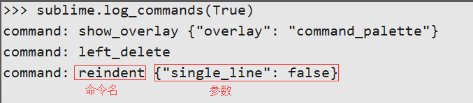

Sublime Text¶
2015-11-10 22:59:38
Sublime 作为文本编辑器，却有着相当出色的扩展，并且有着完美的跨平台，Windows,Mac,Linux都能很方便安装使用，是一款轻量IDE，自从接触到它，就被这种方便，快速，优雅的操作所深深吸引。
废话不多说，总结了自己平时常用的操作。
一、安装¶
下载Sublime：建议下载Sublime Text 3
二、安装Package¶
Package Control
-
方法一：手动安装
- GitHub下载Zip：Package Control
- 解压Zip文件，并重新给文件夹命名“ Package Control ”
- 拷贝解压文件夹到，Sublime菜单栏Preferences > Browse Packages打开【Packages】文件夹
- 重启Sublime
-
方法二：在线安装【推荐】
- 进入官网复制对应版本安装代码 Sublime Text 3：Package Control
- 快捷键Ctrl+`或者通过View->Show Console菜单打开命令行
- 粘贴复制官网的安装代码，并Enter
- 重启Sublime
三、常用插件¶
- Themes
虽然Sublime自带Themes，但个人比较喜欢Material Theme - Ctrl+Shift+P，输入：
Install Package，回车 - 加载完毕后，在窗口中输入
Material Theme，回车安装 - Sublime菜单栏 Preferences > Color Scheme > Material Theme
- AdvancedNewFile
项目树形机构中快速定位，新建，修改，删除文件 - Ctrl+Alt+N，打开命令窗口
- 输入：路径/文件名
- SyncedSideBar
自动定位打开文件所在树形机构项目中的位置 - Emmet
代码补齐 ul.new>li*5：表示ul的class="new"，里面有5个li，写完一个li，可以用Tab键，跳入下一个li中进行编辑- 对选中内容进行包裹
- 选中要包裹的内容
- Ctrl+Shift+P >
wrap with abbrebiation - 在下面的命令处，直接进行用 . 设置class, # 设置id等操作
四、快捷键¶
常用快捷键
- 编辑
- 多行游标：Ctrl+D
- 撤销：Ctrl+Y
- 合并行：Ctrl+J
- 选中当前行：Ctrl+L
- 删除当前行：Ctrl+Shift+K
- 格式化粘贴：Ctrl+Shift+V
- 移动当前行，上/下：Ctrl+Shift+Up 或者 Ctrl+Shift+Down
- 当前行上/下加入光标：Alt+Ctrl+Up 或者 Alt+Ctrl+Down
- 当前行之后，插入新行：Ctrl+Enter
- 当前行之前，插入新行：Shift+Ctrl+Enter
- 复制光标所在整行，插入到下一行：Ctrl+Shift+D
- 选中花括号里面的全部内容不包括{}：Ctrl+Shift+M
- 显示
- 放大字体：Ctrl++
- 缩小字体：Ctrl+-
- 默认分屏-1屏：Alt+Shift+1
- 左右分屏-2列：Alt+Shift+2
- 垂直分屏-2排：Alt+Shift+8
- 格式化代码(命令模式)：
reindent lines
- 搜索
- 关键字：Ctrl+F
- 查找替换：Ctrl+H
- 项目文件：Ctrl+P【文件目录/文件名（精确某个文件目录下查找）】
- 项目文件定位行：Ctrl+P【文件名:输入数字（文件名可省略，定位当前文件）】
- 当前文件函数定位：Ctrl+R
- 项目文件函数定位：Ctrl+P【文件名:@函数名（文件名可省略，定位当前文件）】
- 当前文件变量名，属性：Ctrl+:
- 退出多行编辑，搜索，命令模式：Esc
自定义快捷键
- 搜Key Binding-User：Ctrl+Shift+P控制面板中输入：
Key Binding-User - 配置文件
[ {"keys":["快捷键方式"],"command":"命令名称","args":{"single_line": false}}, ]
扩展：命令名称确定
- Ctrl+` 打开控制台，并输入：
sublime.log_commands(True)，回车执行 - Ctrl+Shift+P打开命令面板，输入一个操作动作，在下方控制台中就会输出命令的名称，以及参数
 - Ctrl+S保存即可